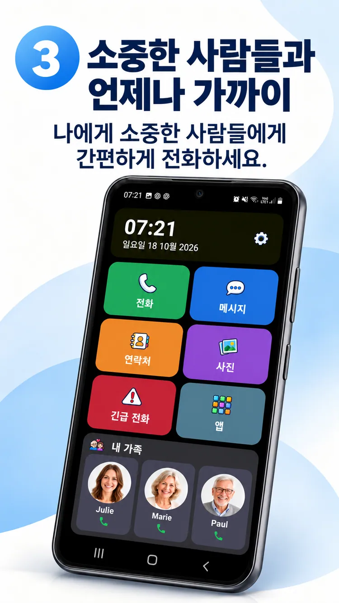

01
사진으로 바로 전화.
소중한 사람을 가까이.


안드로이드 홈 화면을 쉽게 사용하고, 소중한 사람과 빠르게 연락하세요. 중요한 일상에 더 집중할 수 있습니다.
ClikoSpido는 호환되는 안드로이드 스마트폰의 홈 화면을 명확하고 친숙하게 바꾸며 자유롭게 조정할 수 있게 합니다.
큰 버튼과 유용한 기능을 한눈에 볼 수 있도록 구성했습니다.

통화, 메시지, 연락처, 사진, 카메라, 긴급 연락 바로가기에 빠르게 접근하세요.
홍보용 이미지로 실제 설치 화면과 다를 수 있습니다.
소중한 사람을 가까이.

큰 숫자 키패드와 읽기 쉬운 화면.
사진과 가나다·알파벳 검색.
가족이 화면을 조정하고 허용할 앱을 선택하며 일부 설정을 PIN으로 보호할 수 있습니다.
한국어로 된 공식 홍보 이미지 8장을 확인하세요.
시작하기 전 궁금한 점을 확인하세요.
네. 호환되는 안드로이드 스마트폰에서 기본 홈 앱으로 설정할 수 있습니다.
아니요. 현재 사용하는 호환 기기를 더 쉽게 만들 수 있습니다.
아니요. 메시지 버튼으로 기존 메시지 앱을 실행합니다.
아니요. 지정된 연락처로 연결하는 기능이며 공식 긴급 구조 서비스를 대신하지 않습니다.